A Comparative Study of RAG versus Fine Tuning for Answering Aerospace Military Doctrinal and Regulatory Questions
Kalia González, Juan Diego Ortega-Medina1, Nicolás Díaz, Mario Linares-Vasquez, Ruben Manrique, Alexandra Zabala-López Systems and Computing Engineering Department, Universidad de los Andes, Colombia Fuerza Aeroespacial Colombiana, Grupo de Investigaci´on en Estudios Aeroespaciales GIEA, Colombia
This page accompanies the article and gathers, in a single place, the 13 metrics used to compare the four evaluated models. Each chart is a box plot showing the distribution of results per document category. Below each figure is a short reading of what can be observed — not a statistical verdict, but a guide to interpreting the plot.
Compared models
- Gemma3-12b
- Granite4-3b
- Qwen3-14b
- Qwen2.5-14b FT (instruction-tuned)
Document categories
- EDAES · MATER · PORFAC · GUTER · HISTORIA — five document sources over which the summaries were generated and evaluated. In every chart they appear as the five groups of boxes along the horizontal axis.
Lexical overlap
These metrics compare words and word sequences (n-grams) between the generated summary and the reference summary. They reward literal matches, so they penalize a model that says the same thing using different words.
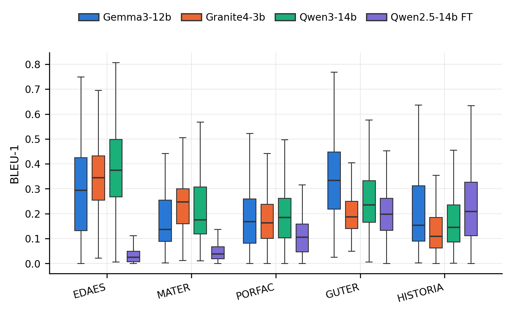
Single-word matching
Measures what proportion of individual words in the generated summary also appear in the reference. It is the most permissive BLEU variant, since it requires neither order nor contiguity.
In EDAES and MATER, Qwen2.5-14b FT falls well below the other three models, with boxes compressed near zero. In PORFAC, GUTER and HISTORIA the gap narrows and its boxes move closer to the rest.
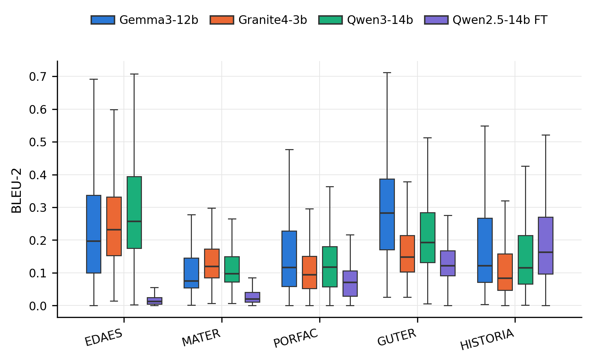
Word-pair matching
Same as BLEU-1 but requires bigrams (consecutive word pairs) to match, which makes it more sensitive to order and exact phrasing.
The pattern holds: Qwen3-14b tends toward the highest medians in EDAES and GUTER, while Qwen2.5-14b FT shows the lowest and narrowest boxes in almost every category, with the partial exception of HISTORIA.
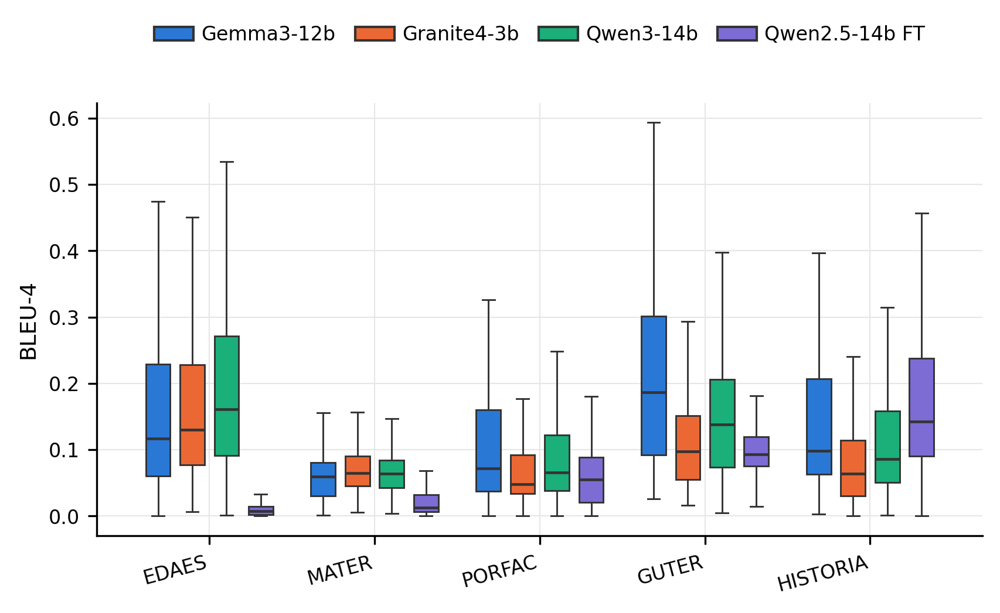
Four-word sequence matching
The strictest BLEU variant: it requires matches of four consecutive words. Low values are normal even for good-quality summaries, because few sentences repeat word for word.
All models sit at modest values (medians between 0.05 and 0.20), which is expected given how demanding the metric is. GUTER is the category where the models separate the most, with Gemma3-12b leading.
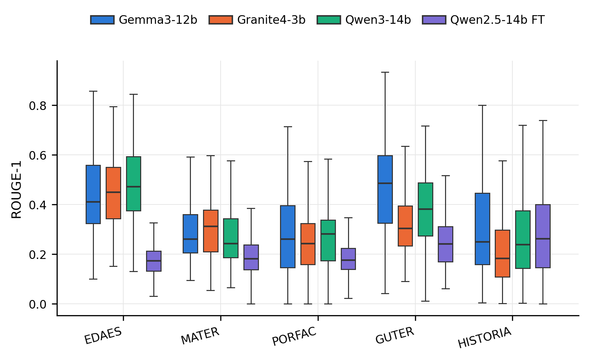
Single-word recall
Unlike BLEU, ROUGE is recall-oriented: it measures how much of the reference content the generated summary manages to recover, word by word.
Gemma3-12b, Granite4-3b and Qwen3-14b move within similar ranges (medians ~0.25–0.49 depending on category). Qwen2.5-14b FT stays consistently below in EDAES, MATER, PORFAC and GUTER, but in HISTORIA its box fully overlaps with those of the other models.
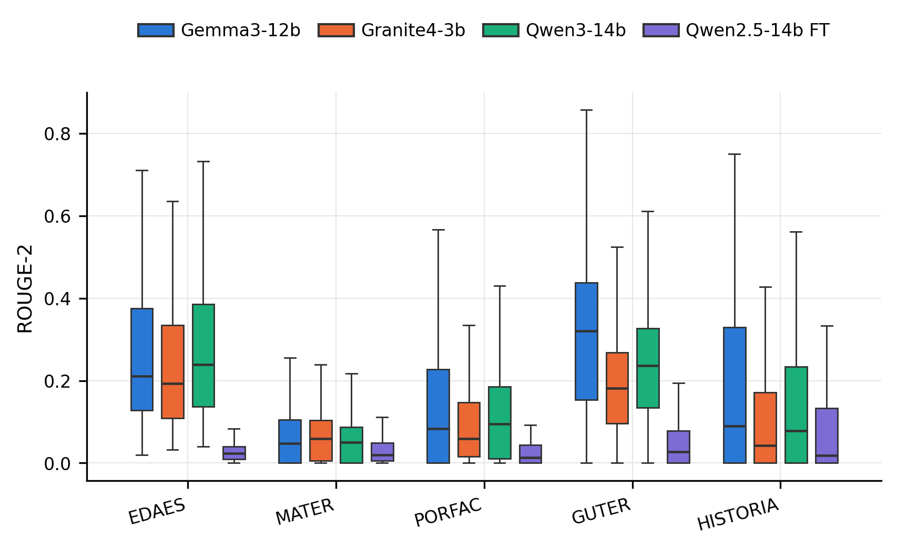
Word-pair recall
A bigram-based version of ROUGE; more demanding than ROUGE-1 because it requires the local word order to be preserved.
This is the metric where the difference between Qwen2.5-14b FT and the rest is most pronounced in relative terms: its boxes are compressed near zero across all five categories, including HISTORIA.
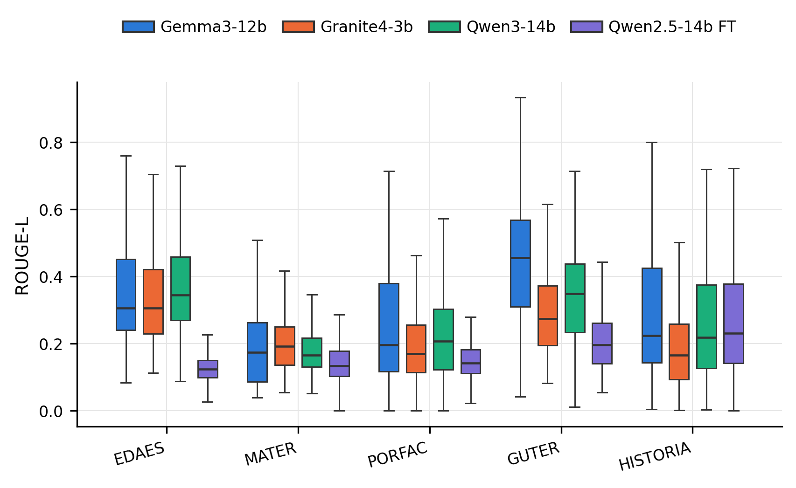
Longest common subsequence
Based on the longest common subsequence between summary and reference, capturing structural similarity without requiring the words to be strictly consecutive.
Its behavior is intermediate between ROUGE-1 and ROUGE-2: Qwen2.5-14b FT still trails the rest in most categories, but in HISTORIA its values are comparable and its median even exceeds that of Granite4-3b.
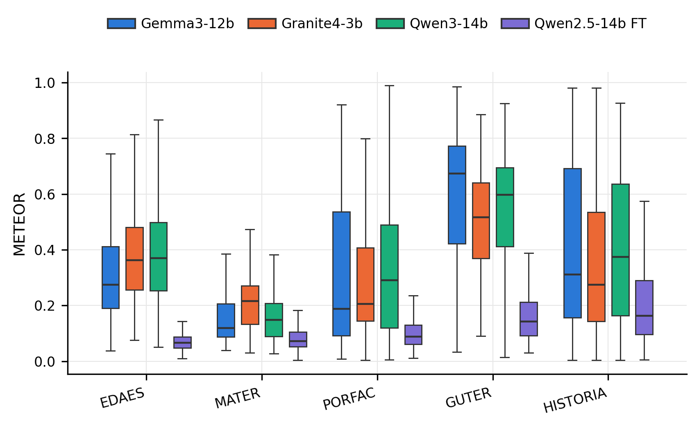
Lexical matching with synonyms and stems
METEOR relaxes exact matching by also considering synonyms and derived word forms, in addition to penalizing fragmentation of word order.
GUTER concentrates the highest values for all models (medians from 0.5 to 0.68), while MATER and PORFAC are more demanding. Qwen2.5-14b FT stays below the rest in all five categories, although the distance shrinks in HISTORIA.
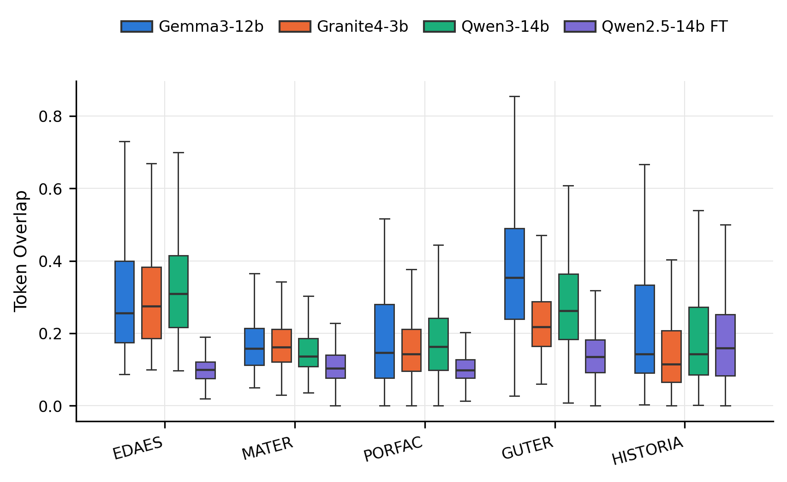
Raw proportion of shared tokens
A simple overlap measure: what fraction of tokens in the generated summary also appears in the reference, without weighting by order or frequency.
GUTER is again the category with the highest overlap for the three base models. Qwen2.5-14b FT shows narrower and lower boxes across all categories, with the exception of HISTORIA, where its median approaches that of Qwen3-14b.
Semantic similarity
Unlike the previous group, these metrics compare meaning rather than exact words, using vector representations (embeddings). A summary can fully paraphrase the reference and still score high.
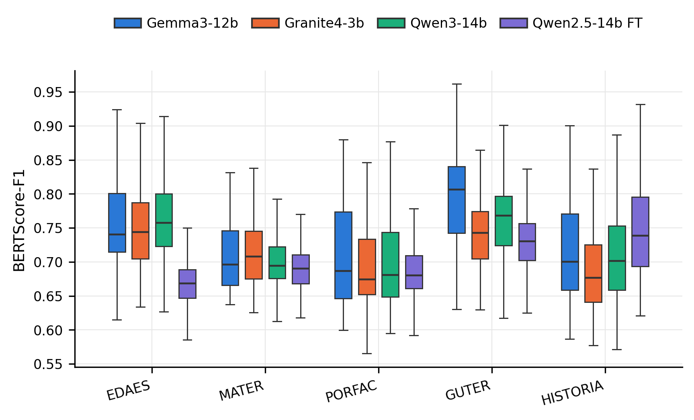
Balance between semantic precision and recall
Combines precision and recall computed over contextual embeddings, giving a single semantic-similarity score between summary and reference.
Here the story changes relative to the lexical group: in HISTORIA, Qwen2.5-14b FT reaches the highest median of the four models (~0.74), and in the remaining categories its box overlaps considerably with those of the base models, although starting from a lower position in EDAES.
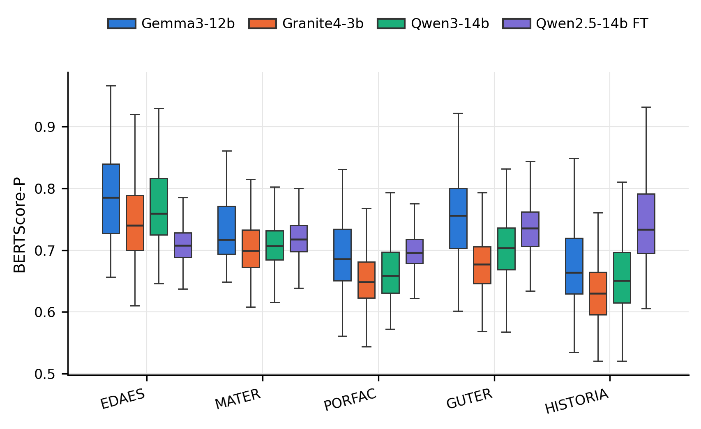
Semantic precision
Measures how much of the generated content has semantic support in the reference: it penalizes "invented" or irrelevant content, even if it is well written.
Gemma3-12b tends toward the highest precision medians in EDAES and GUTER. Qwen2.5-14b FT is competitive in PORFAC, GUTER and HISTORIA, and in the latter category it even surpasses the median of the other models.
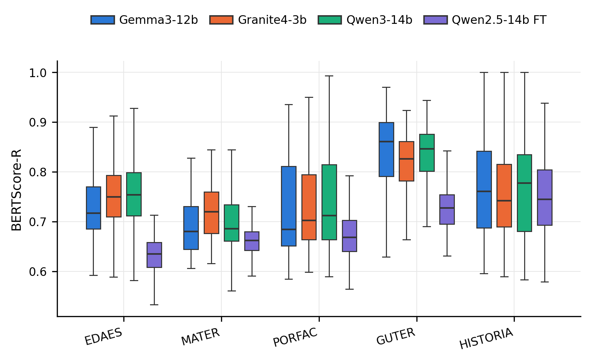
Semantic recall
Complements precision: it measures how much of the reference's semantic content the generated summary manages to cover, even if it uses different words.
GUTER concentrates the highest recall values for all models. Qwen2.5-14b FT starts lower in EDAES and MATER, but in HISTORIA its distribution is comparable to those of Gemma3-12b and Granite4-3b.
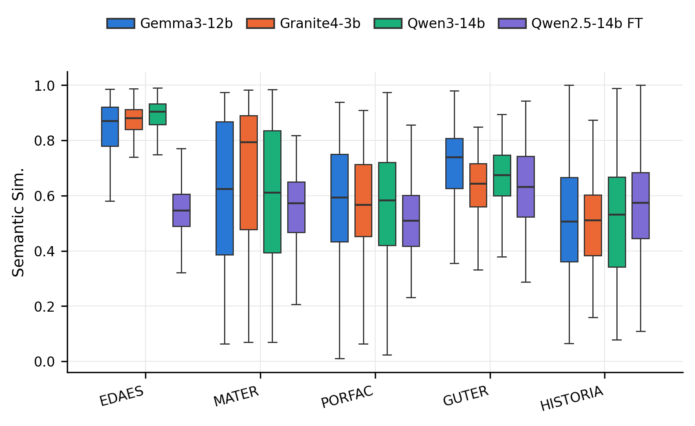
Full-sentence embedding similarity
Cosine similarity between the embedding of the full summary and that of the reference; unlike BERTScore, it compares the text as a single unit rather than token by token.
EDAES shows the highest and most consistent values for all four models (medians above 0.85 for the three base models). MATER presents the widest spread in the whole figure, with very tall boxes across all models. Qwen2.5-14b FT stays somewhat below the rest in almost every category, except GUTER, where it comes fairly close.
Efficiency
Summary quality is only half the story: this section looks at how long each model takes to generate a response.
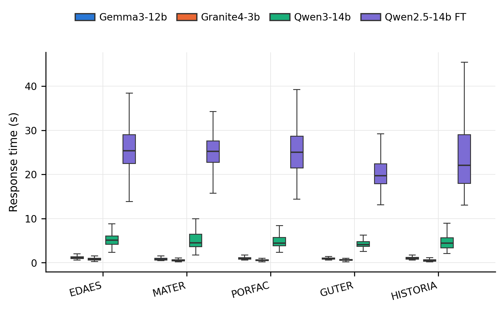
Generation time per summary
Seconds each model takes to produce a complete summary, measured by document category.
The difference here is the sharpest of the whole set: Gemma3-12b and Granite4-3b respond in under two seconds across all categories, Qwen3-14b sits in a moderate range (~4–6 seconds), and Qwen2.5-14b FT needs between 20 and 30 seconds on average — an order of magnitude slower than the base models.